← Index · ← Previous · Next →
Authors: Aref Pahlevani, Morteza Rafiee, Mehdi Ansari-rad
Type: theory · Category: statistical mechanics · PDF: https://arxiv.org/pdf/2605.01723v1
Analysis basis: full PDF text, analyzed in chunks
Topic relevance: 🔥 non-equilibrium dynamics 4/5 · driven-dissipative phase transition 3/5 · correlated / nonlocal dissipation 2/5 · methods for driven-dissipative 2/5
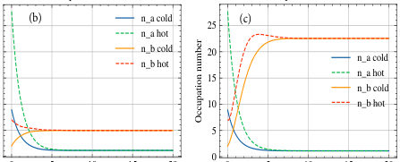
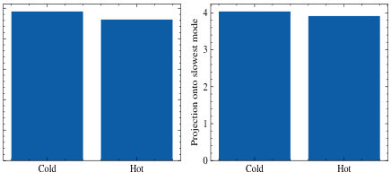
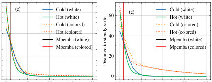
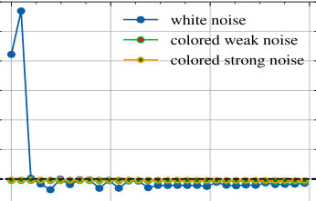
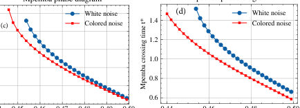
Summary. This paper explores how parametric driving and colored noise influence the Mpemba effect in coupled oscillators. It finds that while driving is the essential mechanism for anomalous relaxation, colored noise further accelerates this process and widens the parameter range where it can be observed.
Why it may be interesting. It provides new insights into how environmental memory (non-Markovianity) and external driving can be used to control anomalous relaxation dynamics in open quantum systems.
Main problem. Investigating the Mpemba effect (anomalous relaxation) in a pair of coupled harmonic oscillators subject to parametric driving and both Markovian (white) and non-Markovian (colored) noise.
Main result. Parametric driving is the primary driver of the Mpemba effect, while colored noise enhances the effect by accelerating relaxation and expanding the parameter space where the effect occurs.
Method. The study uses the covariance-matrix formalism, quantum Langevin equations, and the Lyapunov equation, employing spectral decomposition of the drift matrix and Markovian embedding for colored noise.
Model / system. A pair of linearly coupled harmonic oscillators where one oscillator is parametrically driven and coupled to independent thermal baths (Gaussian white or Lorentzian colored noise).
Key observables. Frobenius distance to the steady state, projection onto the slowest relaxation mode, and the Mpemba crossing time (t*).
Important parameters / regimes. Parametric driving amplitude (Lambda), coupling strength (g), noise correlation time, and damping rates.
Assumptions / limitations. The dynamics are assumed to be Gaussian and bosonic, with noise modeled via Lorentzian spectral density.
Figures summary. Phase diagrams showing the Mpemba crossing time (t*) and the Mpemba strength (M) as functions of driving and coupling strength, illustrating the expansion of the effect under colored noise.
Paper structure. The paper introduces the Mpemba effect in driven systems, defines the coupled oscillator model and noise regimes, details the covariance-matrix and spectral methods, presents results on the influence of driving and noise, and concludes with potential applications.
We study the Mpemba effect in a pair of linearly coupled harmonic oscillators, one of which is parametrically driven and coupled to an independent thermal bath. Using the covariance-matrix formalism, we derive the relaxation dynamics under both Gaussian white noise and Lorentzian colored noise, including single-channel and dual-channel noise embedding. We characterize relaxation through the Frobenius distance to the steady state and through the projection onto the slowest mode of the dynamical generator. Our results show that parametric driving provides the primary control knob for anomalous relaxation: as the drive approaches the stability boundary, the Mpemba crossing time decreases systematically. Colored noise further enhances the effect, with dual-oscillator Lorentzian noise producing a stronger reduction in the crossing time than single-oscillator noise and enlarging the parameter region where the Mpemba effect occurs. Nevertheless, the slow-mode structure of the drift matrix remains the dominant mechanism, while the influence of colored noise is secondary and mainly quantitative. We show that the Mpemba crossing time decreases as the system approaches the parametric stability boundary and that Lorentzian colored noise enlarges the region in the parametric and coupling strength plane where the Mpemba effect is observed.
Authors: Yan Liu, Ya-Wen Sun, Yuan-Tai Wang
Type: theory · Category: statistical mechanics · PDF: https://arxiv.org/pdf/2605.02446v1
Analysis basis: full PDF text, analyzed in chunks
Topic relevance: 🔥 entanglement & information structure 4/5 · 🔥 scars & prethermalization 4/5 · non-equilibrium dynamics 3/5
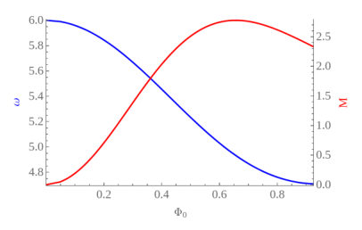
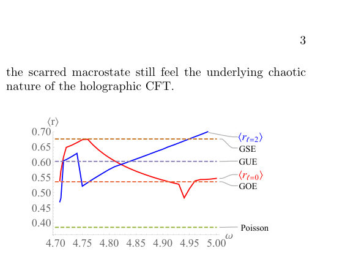
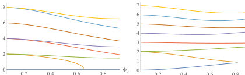
Summary. This paper demonstrates that holographic boson stars act as a realization of quantum many-body scars. It shows that these horizonless objects support integrable spectral branches and exhibit non-thermal entanglement and complexity revivals despite being embedded in a chaotic gravitational background.
Why it may be interesting. It connects gravitational dynamics to many-body scar physics, providing a holographic window into how non-ergodic, integrable subsectors can coexist with chaos, which is highly relevant to many-body dynamics and quantum chaos.
Main problem. Investigating whether holographic boson stars provide a gravitational realization of quantum many-body scars, characterized by non-thermal, integrable-like states embedded within a chaotic spectrum.
Main result. The study finds that boson stars exhibit a 'scarred' structure where the spectrum shows random-matrix signatures of chaos alongside embedded integrable branches, accompanied by subthermal entanglement and periodic revivals in Krylov complexity.
Method. The authors use numerical shooting methods for background solutions, WKB approximation for asymptotic spectral analysis, and Random Matrix Theory (RMT) to analyze spectral statistics.
Model / system. Asymptotically AdS mini-boson stars in 3+1 dimensions, modeled by Einstein gravity minimally coupled to a complex scalar field.
Key observables. Average gap ratio
Important parameters / regimes. Cosmological constant, scalar mass, central scalar amplitude, and angular momentum l.
Assumptions / limitations. The analysis is limited to the 'mini' boson star regime, which prevents a definitive large-mass scaling analysis to distinguish between volume-law and sub-volume-law entanglement.
Figures summary. Figure 1 shows mass and frequency vs. central amplitude; Figure 2 shows normal-mode spectra; Figure 3 shows the transition in gap ratios; Figure 4 compares entanglement entropy of boson stars to black holes; Figure 5 shows periodic revivals in Krylov complexity.
Paper structure. The paper introduces the problem of quantum scars in gravity, describes the boson star model and numerical setup, analyzes spectral statistics and integrability, evaluates entanglement and complexity dynamics, and concludes with implications for holographic non-ergodicity.
Quantum many-body scars are atypical nonthermal states embedded in the chaotic spectrum that evade conventional ergodicity. We show that asymptotically AdS mini-boson stars provide a holographic realization of scar-like states. Their spectrum exhibits random-matrix signatures of chaos while supporting embedded integrable spectral branches. The full holographic system, including black holes, is generically chaotic with most eigenstates satisfying the eigenstate thermalization hypothesis; in contrast, the boson star macrostate probes an approximately integrable subsector within this chaotic spectrum, signaling scarred spectral structures. Boson stars further display anomalously low entanglement relative to black holes at the same energy density, and also robust revivals in Krylov complexity, revealing nonergodic dynamics. These spectral, entanglement, and dynamical diagnostics provide unified evidence for holographic quantum scars in a self-gravitating system. Our work suggests a new connection between many-body scar physics, quantum chaos, and horizonless gravitational dynamics.
Authors: Andrea Di Pasquale, Federico Rottoli, Vincenzo Alba
Type: theory · Category: statistical mechanics · PDF: https://arxiv.org/pdf/2605.01595v1
Analysis basis: full PDF text, analyzed in chunks
Topic relevance: 🔥 entanglement & information structure 4/5 · 🔥 non-equilibrium dynamics 4/5 · non-equilibrium universality 2/5
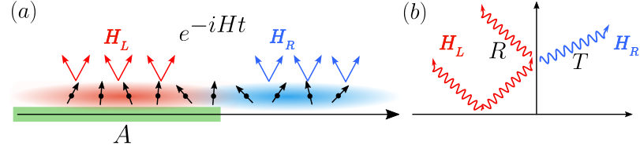
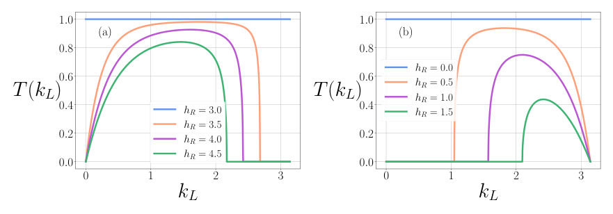
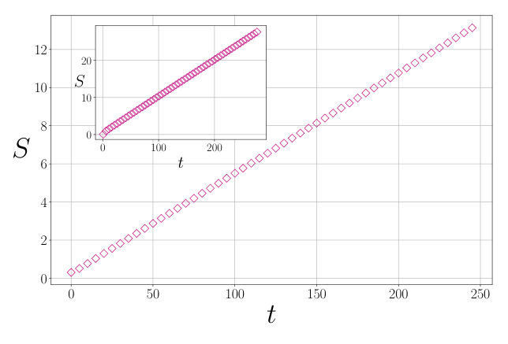
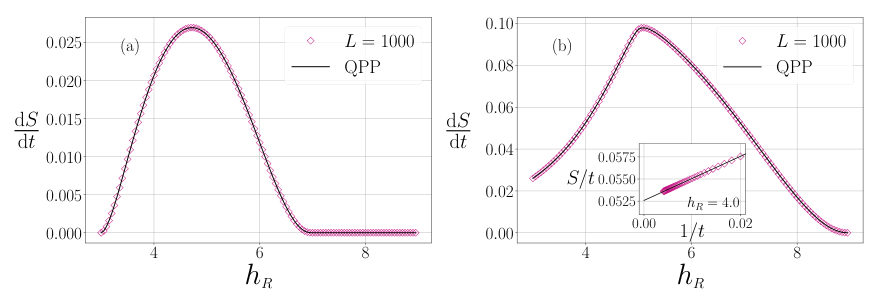
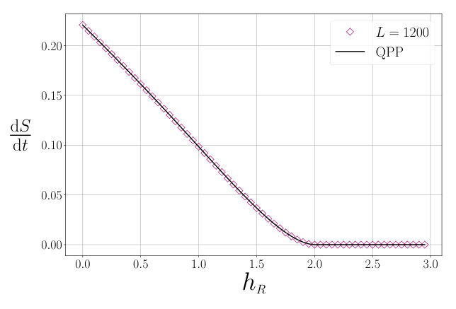
Summary. This paper studies how entanglement spreads after a quantum quench in systems with an interface between two different Hamiltonians. It provides an analytical framework for free-fermion models and discovers that in interacting systems, entanglement can still grow even when the transport of physical quantities like magnetization is blocked by the interface.
Why it may be interesting. It provides a deep look into how spatial inhomogeneities and scattering at interfaces modify the standard quasiparticle picture of entanglement spreading, specifically revealing how interactions can decouple entanglement growth from particle transport.
Main problem. Investigating entanglement dynamics and entropy growth following a quantum quench in one-dimensional many-body systems with inhomogeneous Hamiltonians.
Main result. The authors derive analytical formulas for entanglement growth in free-fermion models (XX and Ising) based on a quasiparticle scattering picture, and find that in the interacting XXZ chain, entanglement can continue to grow even when magnetization transport is suppressed.
Method. Analytical derivation using a quasiparticle picture and scattering theory (solving the lattice Schrodinger equation) combined with numerical simulations using tDMRG and TEBD.
Model / system. One-dimensional bipartite spin chains (XX, Transverse-field Ising, and XXZ models) with an interface where the Hamiltonian parameters (like magnetic field) differ between the left and right regions.
Key observables. Von Neumann entanglement entropy, transmission and reflection coefficients, magnetization, and Yang-Yang entropy.
Important parameters / regimes. Hydrodynamic limit (long times), magnetic field imbalance (h_L vs h_R), anisotropy parameter (delta), and the transmission coefficient (T).
Assumptions / limitations. The proposed analytical formula is specifically derived for cases where the subsystem boundary coincides with the Hamiltonian interface.
Figures summary. Figure 1 shows the setup and scattering mechanism; Figure 2 plots transmission coefficients for Ising and XX chains; Figure 3 shows linear entanglement growth for free models; Figure 4 shows numerical slopes for the Ising model; Figure 5 shows the vanishing of growth in the XX chain; Figures 6 and 7 show entanglement growth and magnetization profiles for the interacting XXZ chain.
Paper structure. Introduction of the problem and setup, analytical derivation of the scattering-based quasiparticle picture for free fermions, numerical benchmarking for XX and Ising chains, extension to the interacting XXZ chain via tDMRG, and discussion of the discrepancy between entanglement and transport in the interacting regime.
We investigate entanglement dynamics in bipartite systems governed by inhomogeneous Hamiltonians of the form $H = H_L + H_R$, where $H_{L/R}$ acts only on the left or right region and is homogeneous within each region. Focusing on the XX chain and the transverse-field Ising chain, we derive analytical formulas for the entanglement entropy between the two regions in the hydrodynamic limit of long times. In this regime, fermions incident on the interface undergo scattering, generating entanglement between reflected and transmitted modes. The resulting quasiparticle picture is controlled by the transmission coefficient, which we obtain analytically by solving the stationary lattice Schrödinger equation. Due to the bounded dispersion, strong inhomogeneity suppresses both transport and entanglement growth. We benchmark our analytical predictions against numerical simulations in paradigmatic setups. Finally, we extend the analysis to the interacting XXZ chain using tDMRG. The numerical data show qualitative agreement with the quadratic case: entanglement growth remains suppressed in the strongly inhomogeneous limit. Notably, however, entanglement continues to increase even when transport is suppressed, at least at intermediate times.
Authors: Jianming Wen
Type: theory · Category: quantum information and computing · PDF: https://arxiv.org/pdf/2605.01052v1
Analysis basis: full PDF text, analyzed in chunks
Topic relevance: 🔥 interference shaping light 4/5 · entanglement & information structure 3/5 · quantum measurements 3/5
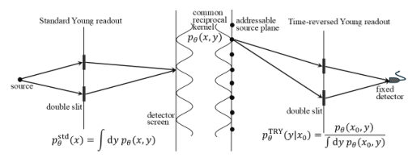
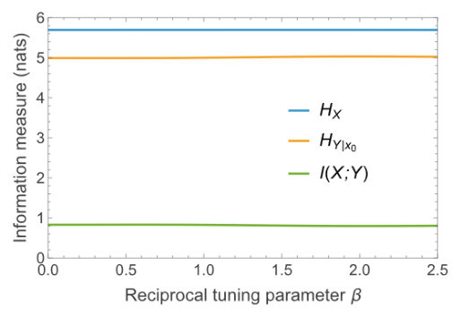
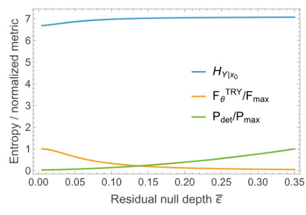
Summary. This paper shows that time-reversed Young interferometry acts as an information processor that redistributes rather than reverses entropy. It identifies mutual information as the fundamental invariant between standard and time-reversed optical readouts and demonstrates how operating near destructive interference can boost parameter sensitivity.
Why it may be interesting. It provides a novel information-theoretic perspective on optical interferometry, specifically how 'source-space programming' can be used to engineer measurement sensitivity, which is highly relevant to quantum optics and precision parameter estimation.
Main problem. The paper investigates whether time-reversed Young interferometry (TRY) reverses or reorganizes optical entropy and seeks to identify the reciprocal invariant between standard and time-reversed geometries.
Main result. The authors demonstrate that TRY reorganizes rather than reverses entropy, identifying mutual information as the true reciprocal invariant, and show that sensitivity to perturbations can be enhanced near destructive interference at the cost of detection probability.
Method. The study uses information-theoretic tools including Shannon entropy, Mutual Information, and Fisher Information applied to a statistical framework of joint event distributions and Bayesian updates.
Model / system. A reciprocal linear optical system modeled using scalar paraxial diffraction theory (Fresnel approximation) comparing standard Young interference (detector-plane readout) to a time-reversed geometry (source-plane readout).
Key observables. Detector-space entropy, conditioned source-label entropy, Mutual Information, Fisher Information for parameter estimation, and detection probability.
Important parameters / regimes. Physical perturbations (phase, tilt, defocus, etc.), residual null-depth (epsilon-bar), background noise floor (b), and the dimensionless reciprocal tuning parameter (beta).
Assumptions / limitations. The model assumes scalar paraxial approximation, optical reciprocity, and the absence of nonreciprocal media or polarization-dependent effects.
Figures summary. Figure 1 provides a conceptual comparison of geometries; Figure 2 shows the relationship between detector entropy, source entropy, and mutual information; Figure 3 illustrates the trade-off between sensitivity enhancement and photon-budget cost in a regularized null model.
Paper structure. The paper begins by defining the physical geometries and the statistical framework, moves to establishing the entropic reciprocity and mutual information invariance, analyzes the enhancement of Fisher information in the null-response regime, and concludes with the trade-offs involving background noise and detection probability.
We show that time-reversed Young interferometry reorganizes, rather than reverses, optical entropy. A fixed detector conditions the reciprocal source--detector Green function and produces a source-label probability distribution. Marginal entropies in the standard and time-reversed geometries are generally unequal; the reciprocal invariant is instead the mutual information between source and detector coordinates. Near a destructive response, the conditioned source-label entropy can decrease while Fisher information for small phase, tilt, or defocus perturbations increases. The result identifies time-reversed Young interferometry as a source-space information processor with no analogue in ordinary detector-plane fringe readout.
Authors: Hassan Manshouri, Moslem Zarei, Mehdi Abdi, Yasser Omar, Sougato Bose, Abolfazl Bayat
Type: theory · Category: quantum gases · PDF: https://arxiv.org/pdf/2605.02872v1
Analysis basis: full PDF text, analyzed in chunks
Topic relevance: 🔥 quantum measurements 4/5 · analog quantum simulation 3/5 · entanglement & information structure 3/5
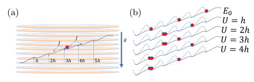
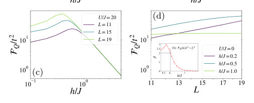
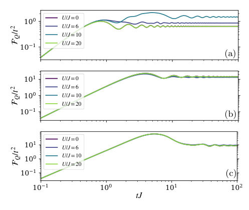
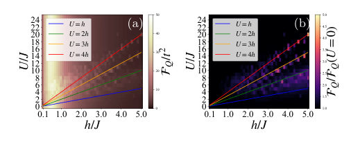
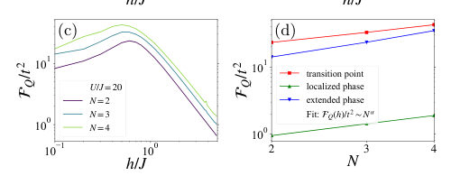
Summary. The paper shows that by tuning the on-site interactions of a Bose-Einstein Condensate in a vertical optical lattice to match a resonance condition with the gravitational gradient, one can significantly enhance the precision of gravimetry. This resonance-induced amplification allows for better gravitational acceleration measurements using a finite number of particles.
Why it may be interesting. It demonstrates how many-body interactions, typically seen as a source of complexity, can be precisely tuned to enhance quantum sensing metrology in ultracold atom systems.
Main problem. Investigating how to enhance the precision of gravitational field (gradient field h) measurements using many-body physics in optical lattices.
Main result. On-site interactions can amplify the Quantum Fisher Information by a factor of approximately 4 when the resonance condition U = mh is met, improving gravitational sensitivity by a factor of approximately 2.
Method. Quantum Estimation Theory using the Quantum Fisher Information (QFI) and the Cramér-Rao bound to analyze the scaling of sensing precision.
Model / system. A Bose-Einstein Condensate (BEC) of ultracold bosonic atoms confined in a vertical 1D optical lattice, modeled by the Stark Bose-Hubbard Hamiltonian.
Key observables. Quantum Fisher Information (QFI), gravitational sensitivity (delta g/g), site occupation, and the resonance coefficient Ar(U, m).
Important parameters / regimes. On-site interaction strength (U), tunneling rate (J), gradient field strength (h), lattice size (L), and particle number (N).
Assumptions / limitations. The system is analyzed in the long-time limit where QFI scales as t^2, and the analysis focuses on the unitary time evolution of the state.
Figures summary. Fig 1 shows the lattice schematic and particle tunneling at resonance; Fig 2 shows the time evolution of normalized QFI across different phases; Fig 7 plots normalized QFI and the resonance coefficient for different m and N.
Paper structure. The paper introduces the problem of gravimetry, defines the Stark Bose-Hubbard model, analyzes QFI scaling in different phases (localized, transition, extended), quantifies the resonance enhancement via the coefficient Ar, and concludes with the implications for sensitivity.
By confining a Bose-Einstein condensate in a vertical lattice subjected to a gravitational potential, we analyze the quantum Fisher information to determine its scaling with respect to time, system size and particle number. Our results reveal that in the localized phase, on-site interactions $U$ amplify the quantum Fisher information by a factor with respect to resonance condition $U=mh$ where $U$ is factor of gradient field amplitude $h$. This precision enhancement can be employed in gravitational acceleration measurements with a finite number of particles trapped in optical lattices.
Authors: Ivan P. Christov
Type: theory · Category: numerical methods · PDF: https://arxiv.org/pdf/2605.01728v1
Analysis basis: full PDF text, analyzed in chunks
Topic relevance: 🔥 entanglement & information structure 4/5 · methods for driven-dissipative 2/5 · non-equilibrium dynamics 2/5 · quantum measurements 2/5
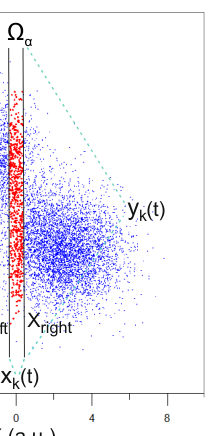
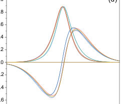
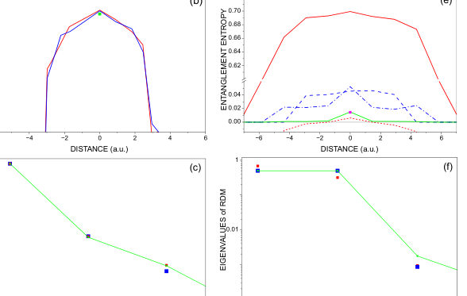
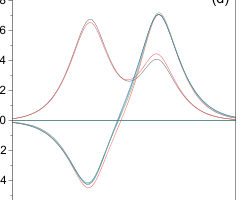
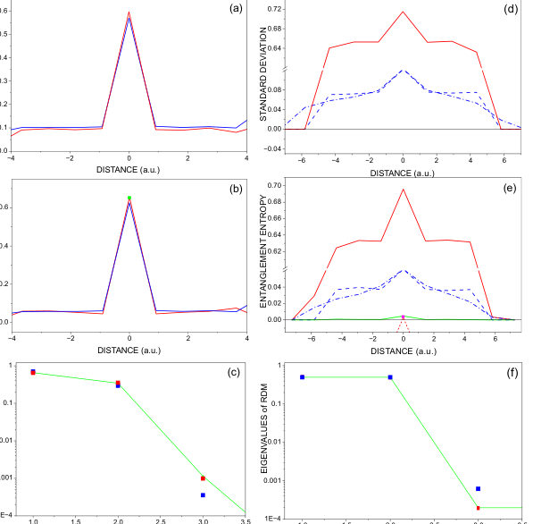
Summary. This paper introduces a new method to map quantum entanglement in real space by analyzing the statistical diversity of one-body wavefunctions in a Monte Carlo ensemble. By treating the Gram matrix of these waves as a covariance operator, the authors show that entanglement entropy can be tracked via functional standard deviation. This approach avoids the heavy computational cost of full many-body wavefunction reconstruction.
Why it may be interesting. It provides a novel bridge between classical ensemble statistics and quantum entanglement, offering a way to map the spatial distribution of correlations in many-body dynamics using efficient Monte Carlo-based diagnostics.
Main problem. Developing a computationally efficient, real-space diagnostic tool to extract spatially resolved quantum entanglement and coherence directly from an ensemble of marginal wavefunctions without reconstructing the full many-body wavefunction.
Main result. The paper demonstrates that the Gram matrix of a marginal-wave ensemble acts as a covariance operator whose spectrum matches the Schmidt spectrum, and its functional standard deviation accurately tracks the spatial profile of von Neumann entanglement entropy.
Method. The authors utilize Time-Dependent Quantum Monte Carlo (TDQCO) to generate an ensemble of one-body wavefunctions and particle trajectories, applying spatial partitioning and Gram matrix analysis to compute local entanglement metrics.
Model / system. The framework is applied to one-dimensional two-electron bosonic and fermionic systems, specifically including the 1D helium atom (parahelium and orthohelium) and 1D hydrogen-like molecules.
Key observables. Gram matrix spectrum, Schmidt spectrum, von Neumann entanglement entropy, functional standard deviation, reduced density matrix (RDM), and local linear entropy.
Important parameters / regimes. Hartree-Fock limit (weak entanglement), interaction-driven divergence (enhanced entanglement), and spatial domains (Omega_alpha) for partitioning.
Assumptions / limitations. The method relies on the specific dual particle-wave representation of TDQMC; it assumes localization occurs in walker configuration space and that spatial domains do not restrict the global support of marginal waves.
Figures summary. Figure 1 shows spatial partitioning of a molecule; Figure 2 displays walker distributions and guide waves for helium and hydrogen-like systems; Figure 3 compares TDQMC and exact results for entropy, standard deviation, and Schmidt spectra; Figure 5 shows spatially resolved statistics for molecules.
Paper structure. The paper introduces the statistical framework for wave ensembles, develops the Gram matrix and functional statistics approach, applies the method to 1D helium atoms to validate against exact results, extends the analysis to 1D hydrogen-like molecules, and discusses implications for fermionic antisymmetry and future scalability.
We present a statistical framework for extracting spatially resolved entanglement directly from an ensemble of marginal (one-body) wavefunctions in Time-Dependent Quantum Monte Carlo (TDQMC). Treating the guide waves as a statistical mixture in Hilbert space, we show that the Gram matrix acts as a covariance operator whose spectrum coincides with the Schmidt spectrum. The associated functional standard deviation closely tracks the von Neumann entanglement entropy both globally and locally via walker partitioning, providing a physically transparent real-space diagnostic of quantum correlations without requiring construction of the full many-body wavefunction. Applications to one-dimensional two-electron bosonic and fermionic systems (helium atom and hydrogen-like molecule) demonstrate excellent agreement with strict conditional-wave results for opposite-spin electrons. For same-spin fermions, TDQMC statistical treatment of exchange symmetry yields positive, physically consistent local entropies. The method establishes a direct bridge between classical ensemble statistics and quantum entanglement measures, offering a computationally efficient real-space diagnostic tool for mapping the spatial distribution of correlations.
Authors: Zhian Jia
Type: theory · Category: quantum information and computing · PDF: https://arxiv.org/pdf/2605.02655v1
Analysis basis: full PDF text, analyzed in chunks
Topic relevance: 🔥 quantum measurements 4/5 · entanglement & information structure 2/5 · methods for driven-dissipative 2/5 · non-equilibrium dynamics 2/5
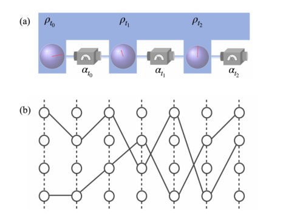
Summary. The paper introduces Temporal State Tomography, a new method to reconstruct quantum processes across multiple time steps using temporal quasiprobability distributions. It demonstrates that complex temporal dynamics can be recovered through simple sequential measurements and provides a theoretical guarantee on the number of experimental samples needed for accurate reconstruction.
Why it may be interesting. This is highly relevant for researchers in open quantum systems and quantum optics as it provides a rigorous method for characterizing the dynamics of time-dependent quantum processes and temporal correlations.
Main problem. Developing a unified framework for Temporal State Tomography (TST) to reconstruct multi-time quantum processes, including both density operators and quantum channels, from experimental data.
Main result. The paper establishes that any temporal quasiprobability distribution (TQD) can be accessed via classical post-processing of quantum instruments and derives the sample complexity required for faithful reconstruction.
Method. The authors use 'quantum snapshotting' to transform TQDs into physically realizable sequential measurements and employ the Choi-Jamiołkowski isomorphism and Hoeffding inequalities to bound reconstruction error.
Model / system. The model considers a multi-time quantum process characterized by an initial state and a sequence of time-ordered, completely positive trace-preserving (CPTP) maps across multiple time instances.
Key observables. Temporal quasiprobability distributions (TQDs), specifically Kirkwood-Dirac and Margenau-Hill distributions, and temporal Pauli correlators.
Important parameters / regimes. Sample complexity (N), error tolerance (epsilon), failure probability (delta), and the dimension of the temporal state space (d).
Assumptions / limitations. The reconstruction assumes the use of informationally complete (IC) instruments and that the temporal state admits a specific linear expansion.
Figures summary. Figure 1(a) illustrates the generalization of multipartite density operators to include timelike correlations, while Figure 1(b) shows the construction of a temporal phase space for quantum trajectories.
Paper structure. The paper introduces the concept of temporal states, defines the TQD-based reconstruction framework, proposes the quantum snapshotting protocol, and concludes with a formal mathematical proof of the sample complexity and error bounds.
Quantum tomography is a cornerstone of quantum information science, enabling the reconstruction of states and channels from experimental data. Here we introduce a new paradigm, temporal state tomography (TST), for reconstructing quantum processes across multiple times. Our approach is based on temporal quasiprobability distributions (TQDs), which, in the informationally complete setting, provide a complete description of multi-time quantum processes and uniquely determine temporal states. We formulate TST as a unified framework for reconstructing both density operators and quantum channels within a single scheme. We show that any TQD can be obtained via classical post-processing of measurement outcomes generated by a fixed set of quantum instruments, thereby establishing a direct operational route to accessing TQDs experimentally. For informationally complete TQDs, the associated temporal state can be reconstructed via a temporal Bloch-type representation. Leveraging this correspondence, we derive the sample complexity of TST, thereby quantifying its statistical efficiency.
Authors: Dolev Goldberger, Ido Zemach, Lei Zhang, Yang Yu, Emanuel Gull, Guy Cohen, André Erpenbeck
Type: theory · Category: strongly correlated electrons · PDF: https://arxiv.org/pdf/2605.02228v1
Analysis basis: full PDF text, analyzed in chunks
Topic relevance: 🔥 Kondo & dissipative impurity 4/5 · Keldysh / 2PI / non-Gaussian methods 2/5 · methods for driven-dissipative 2/5 · non-equilibrium dynamics 2/5
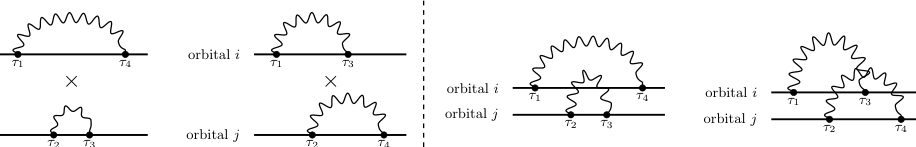
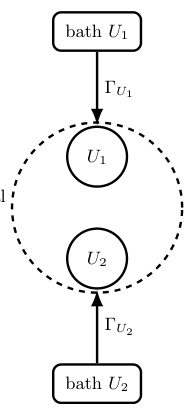
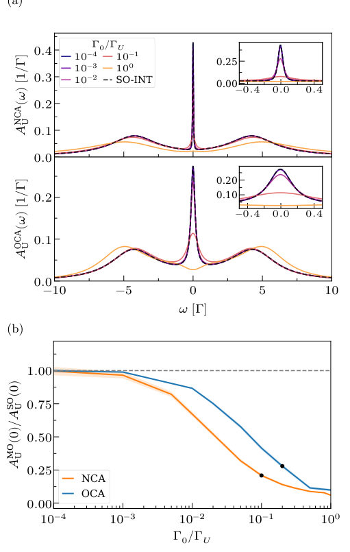
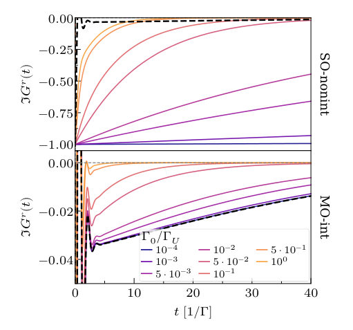
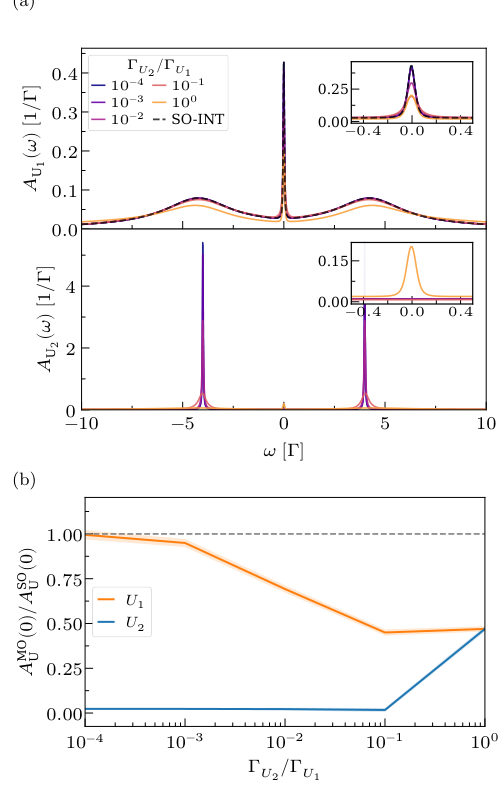
Summary. This paper identifies why low-order hybridization expansion methods fail in multi-orbital settings by showing that the least correlated orbital unphysically suppresses correlations in all other orbitals. It provides a theoretical and numerical guide for determining when single-orbital intuition remains valid in multi-orbital systems.
Why it may be interesting. This is highly relevant for researchers in many-body dynamics and open quantum systems as it identifies a fundamental failure mode in common impurity solvers used to model the dynamics of interacting subsystems coupled to environments.
Main problem. The paper investigates the accuracy and fundamental limitations of low-order hybridization expansion methods, such as NCA and OCA, when applied to multi-orbital quantum impurity systems.
Main result. The authors find that the accuracy of these methods is governed by the least correlated orbital; a spurious coupling is generated by the truncated expansion that transfers the properties of the rapidly decaying orbital to all others, suppressing features like the Kondo resonance.
Method. The study uses an analytical approach based on a decoupled orbital limit as a reference point, combined with numerical verification using two-orbital model systems in the steady-state.
Model / system. A general multi-orbital Anderson impurity model where an interacting impurity region is coupled to infinite noninteracting fermionic baths, allowing for arbitrary intra- and inter-orbital electron-electron interactions.
Key observables. Single-particle spectral functions, real-time retarded Green's functions, and the Kondo resonance peak height.
Important parameters / regimes. Hybridization strength (Gamma), inverse temperature (beta), Coulomb interaction (U), and the hybridization ratio between different orbitals.
Assumptions / limitations. The analysis relies on the truncated hybridization expansion (NCA/OCA) and uses the decoupled orbital limit as a controlled benchmark.
Figures summary. Figure 1 shows Feynman diagrams for NCA and OCA; Figure 2 compares diagrammatic structures of single-orbital vs multi-orbital NCA; Figures 6-9 show spectral functions, Kondo peak suppression, and the decay of retarded Green's functions.
Paper structure. The paper introduces the multi-orbital framework, establishes the analytical connection between multi-orbital and single-orbital propagators in the decoupled limit, identifies the mechanism of spurious coupling, and provides numerical validation through two-orbital steady-state calculations.
Low-order hybridization expansion methods such as the non-crossing approximation (NCA) and the one-crossing approximation (OCA) are widely used impurity solvers in the study of strongly correlated systems, yet their accuracy in genuine multi-orbital settings remains poorly understood. Using the decoupled orbital limit as a controlled reference point, we derive analytic results connecting multi-orbital restricted propagators and Green's functions to their single-orbital counterparts, identify the diagrammatic mechanisms responsible for the breakdown of low-order methods in multi-orbital settings, and determine their regimes of applicability. Our central finding is that the accuracy of these methods is governed by the least correlated orbital: i.e., the orbital with the most rapidly decaying retarded Green's function. That orbital's properties are transferred to all other orbitals through a spurious coupling generated by the truncated expansion, thereby suppressing correlation-induced features such as the Kondo resonance. This occurs even in orbitals that are themselves strongly correlated within single-orbital calculations using the same approximation scheme. We confirm this numerically across representative two-orbital model systems in the steady-state, systematically identifying the parameter regimes in which low-order methods succeed or fail. Our results provide a practical guide for assessing when insights from single-orbital calculations carry over to multi-orbital settings, and serve as a benchmark for the development and validation of higher-order multi-orbital impurity solvers.
Authors: Inbar Sternbach, Kfir Rutman Moshe, Amit Beer, Soumitra Hazra, Sharly Fleischer
Type: both · Category: other · PDF: https://arxiv.org/pdf/2605.02512v1
Analysis basis: full PDF text, analyzed in chunks
Topic relevance: 🔥 interference shaping light 4/5 · quantum optics experiment 3/5 · non-equilibrium dynamics 2/5
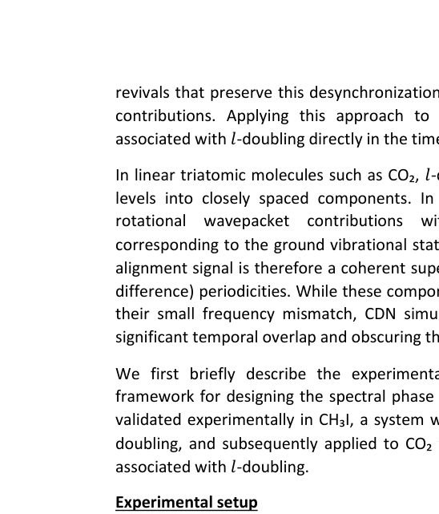
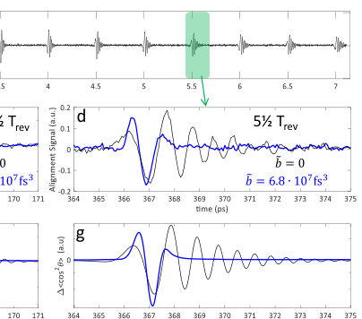
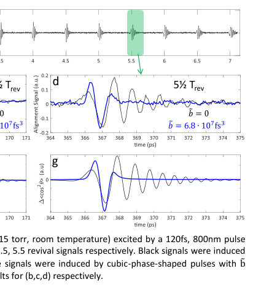
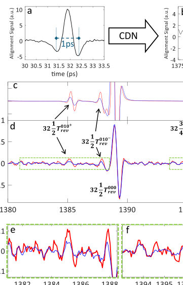
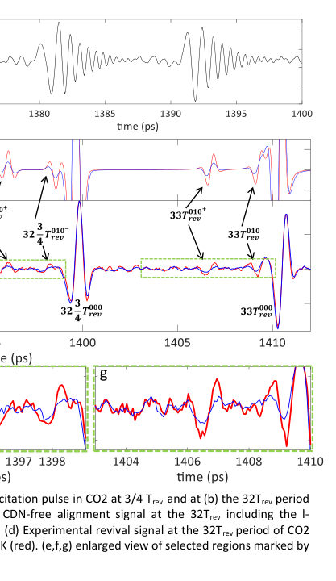
Summary. This paper presents a method to use shaped femtosecond pulses to cancel out centrifugal distortion in rotating molecules. By pre-compensating for this distortion, the researchers were able to resolve fine rotational features, such as $l$-doubling, that are normally obscured in time-domain experiments.
Why it may be interesting. This work is highly relevant to quantum optics and AMO physics as it demonstrates precise coherent control over rotational wavepackets, providing a method to resolve fine-scale quantum features that are otherwise hidden by dephasing.
Main problem. Centrifugal distortion in molecular rotational dynamics causes $J$-dependent dephasing, which leads to broadened, multi-cycle revival structures that obscure fine rotational features like $l$-doubling.
Main result. The researchers demonstrated that applying a cubic spectral phase to femtosecond pulses can pre-compensate for centrifugal distortion, compressing distorted revivals into near single-cycle events and enabling the direct time-domain observation of $l$-doubling in CO2.
Method. The study uses a 4-f pulse shaper with a Spatial Light Modulator to impose a tailored cubic spectral phase on an ultrashort laser pulse, based on an analytical approximation for the required phase coefficient.
Model / system. The study focuses on the rotational dynamics of linear molecules, specifically CH3I for validating centrifugal distortion compensation and CO2 for observing $l$-doubling. The molecules are modeled as rigid rotors with a $J^4$ centrifugal distortion correction.
Key observables. Time-dependent molecular alignment (induced birefringence) and rotational revival structures.
Important parameters / regimes. Rotational constants (B, D), cubic spectral phase coefficients (b-tilde), and gas temperature (up to 403 K for CO2).
Assumptions / limitations. The model neglects the linear term in J (time shift) and the J-independent global phase, focusing primarily on quadratic and cubic spectral phase terms.
Figures summary. Figure 1 shows the experimental setup for transient birefringence; Figure 2 demonstrates the compression of distorted CH3I alignment signals using shaped pulses; Figure 3 shows the resolution of $l$-doubling in CO2 through distortion mitigation.
Paper structure. The paper introduces the problem of centrifugal distortion, presents an analytical framework for pulse design, validates the method using CH3I, and demonstrates the observation of $l$-doubling in CO2.
We demonstrate direct time-domain observation of l-doubling contributions in molecular rotational dynamics using shaped femtosecond laser pulses. By imposing a tailored spectral phase on the excitation pulse, we pre-compensate centrifugal distortion, which otherwise leads to temporally broadened, multi-cycle revival structures that obscure fine rotational features. A cubic spectral phase [Phys. Rev. A 107, 053108 (2023)] compresses selected revivals into near single-cycle events, in agreement with an analytic expression derived from molecular rotational constants, enabling predictive pulse design beyond numerical optimization. The resulting distortion-free revivals reveal temporally separated l-doubling contributions that remain unresolved in conventional impulsive alignment experiments. The method proves robust against experimental imperfections, including spatial light modulator discretization. While selective control of individual l-doubling components becomes feasible, here we focus on their direct observation in the time domain.
Authors: Gaurav Rudra Malik, Amit Kumar Jaiswal, S. Aravinda, Sunil Kumar Mishra
Type: theory · Category: quantum information and computing · PDF: https://arxiv.org/pdf/2605.01253v1
Analysis basis: full PDF text, analyzed in chunks
Topic relevance: 🔥 entanglement & information structure 4/5 · non-equilibrium dynamics 3/5 · scars & prethermalization 2/5
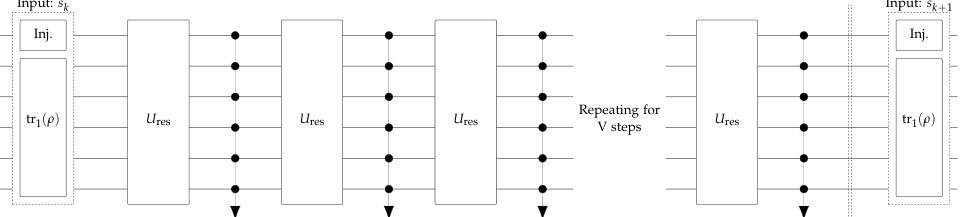
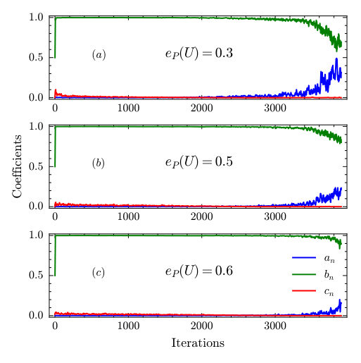
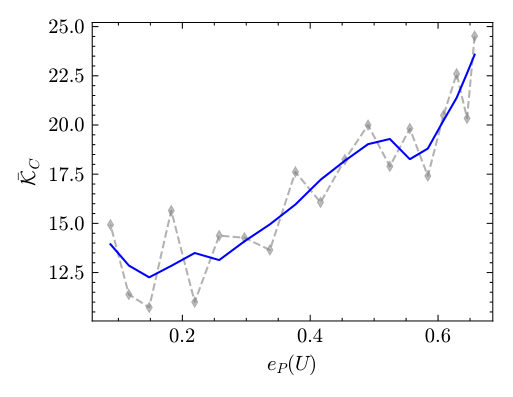
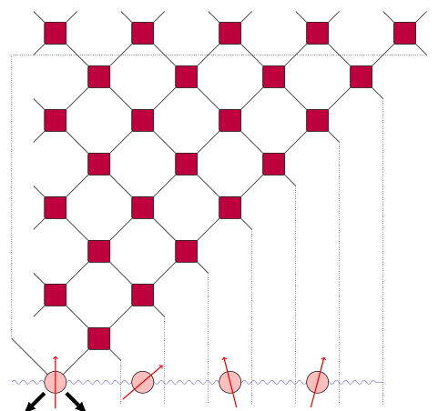
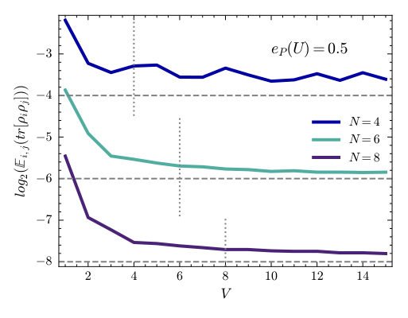
Summary. This paper investigates how the dynamical properties of quantum circuits, such as entangling power and ergodicity, affect their performance in reservoir computing tasks. It demonstrates that structured, non-random circuits can outperform Haar-random ones by operating in an optimal 'edge-of-chaos' regime. The findings suggest that efficient, low-depth quantum circuits can be highly effective for temporal data processing.
Why it may be interesting. The paper provides deep insights into how many-body dynamical properties like scrambling, ergodicity, and the 'edge-of-chaos' directly impact the computational utility of quantum circuits for information processing.
Main problem. Evaluating the effectiveness of structured quantum circuits as reservoirs in the quantum reservoir computing (QRC) paradigm for time-series prediction, specifically investigating how gate choice and ergodicity influence performance.
Main result. Structured quantum circuits, such as dual-unitary and solvable gate models, can serve as efficient reservoirs, with optimal performance occurring in an 'edge-of-chaos' regime where entangling power is balanced.
Method. The study uses Krylov space analytics, Arnoldi iterations, and entangling power metrics to characterize circuit dynamics, alongside benchmarking performance using NARMA and Mackey-Glass time-series prediction tasks.
Model / system. A quantum reservoir computing framework using a brickwall-style circuit architecture composed of 4 to 8 qubits and two-quably gates, including Haar-random, dual-unitary, and solvable gate classes.
Key observables. Entangling power (eP), Krylov complexity, mixing rate, fading memory capacity, prediction accuracy (MSE), and light-cone/entanglement velocities.
Important parameters / regimes. Entangling power (eP), multiplexing depth (V), number of qubits (N), and the edge-of-chaos regime.
Assumptions / limitations. The study uses simplified QRC implementations omitting measurement back-action and feedback, and evaluates performance using synthetic rather than real-world datasets.
Figures summary. Figure 1 shows the QRC workflow; Figure 2 displays Arnoldi coefficients; Figure 4 illustrates operator spreading; Figure 5 shows pairwise overlap statistics; Figure 8 and 10 show task performance (MSE) relative to entangling power and multiplexing depth.
Paper structure. The paper introduces the QRC framework, analyzes the dynamical properties of various gate classes (Haar, dual-unitary, solvable), uses Krylov space tools to link dynamics to performance, and concludes with benchmarking on time-series tasks.
Reservoir computing is a framework which is primarily used for temporal information processing, using the intrinsic dynamics of an underlying physical system. The framework, in a quantum setup, is implemented using ergodic dynamics associated with Hamiltonian models. The computational power of the reservoir is closely tied to this underlying dynamical nature, and to probe this further, we study the effectiveness of a reservoir that is made using structured brickwall circuits built from two-qubit gates. Here, the global ergodic nature of the circuit model results from the said arrangement, which has an important role in extracting useful performance with a minimal setup that is independent of an associated Hamiltonian. We focus on the nature of the gates used in this setup and evaluate the resulting reservoir performance, correlating the same with known results on the dynamical nature of the circuit in question. As a baseline, we analyse brickwall circuits composed of Haar-random two-qubit gates, before moving on to dual-unitaries, where tunable ergodic properties allow us to systematically investigate its relationship with reservoir performance. We further consider a class of non-random two-qubit gates obeying a specific solvability condition, wherein the associated dynamics surpasses the equivalent circuit made up of two qubit Haar random unitaries in terms of randomness. Finally, we consider examples of Krylov space analytics, which allow for a reliable prediction of effective circuit reservoirs for sufficient task performance. Using the introduced metrics we validate the reservoir for time-series prediction using standard synthetic data sets to evaluate the fading memory capacity and accuracy for prediction tasks. Our results indicate that structured quantum circuits would serve as effective models that yield better and efficient task performance in reservoir computing applications.
Authors: Marcin Płodzień, Jan Chwedeńczuk
Type: theory · Category: quantum information and computing · PDF: https://arxiv.org/pdf/2605.02774v1
Analysis basis: full PDF text, analyzed in chunks
Topic relevance: 🔥 entanglement & information structure 4/5 · non-equilibrium dynamics 3/5 · quantum measurements 2/5
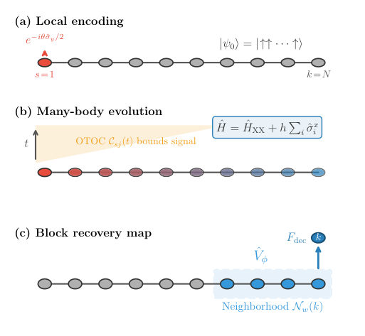
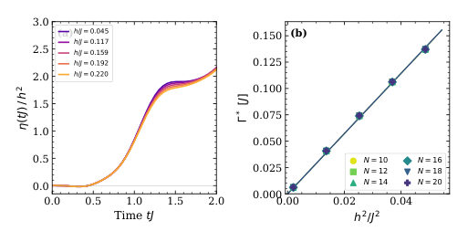
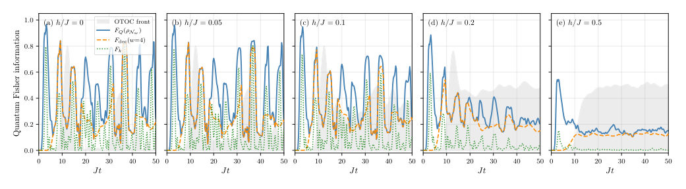
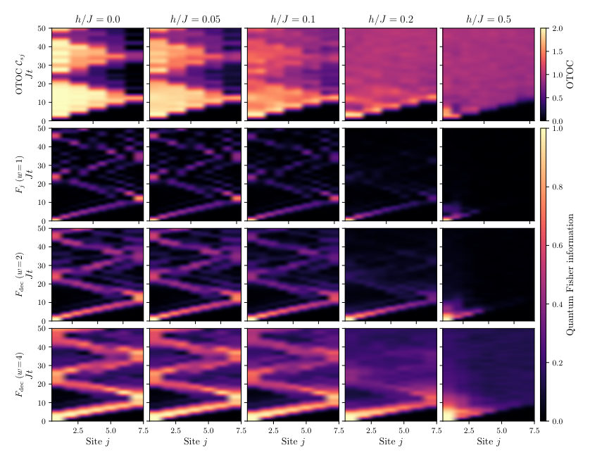
Summary. This paper investigates how breaking $U(1)$ symmetry in a spin chain affects the ability to retrieve encoded quantum information. It demonstrates that while operator spreading defines a causal light cone, the redistribution of sensitivity into multi-body correlations can make that information locally unrecoverable. The study establishes a clear hierarchy between operator arrival and metrological accessibility.
Why it may be interesting. It provides a precise quantitative distinction between the arrival of operator support and the accessibility of metrological information, which is crucial for understanding the limits of quantum sensing in many-body systems and the impact of symmetry-breaking noise.
Main problem. Distinguishing between operator spreading (the arrival of a causal light cone) and the metrological recoverability of parameter sensitivity (Quantum Fisher Information) in a $U(1)$-broken spin chain.
Main result. The authors establish a hierarchy of information accessibility and show that while operator spreading (OTOCs) defines a light cone, $U(1)$-symmetry breaking causes parameter sensitivity to leak into multi-magnon sectors, creating a gap where local information is no longer recoverable even if the operator support has arrived.
Method. Analytical approach using the metrological tangent vector, perturbation theory in the transverse field strength, and numerical optimization of a variational 'sweep' decoder using automatic differentiation.
Model / system. A 1D XX spin chain with $N$ sites and open boundary conditions, subjected to a $U(1)$-breaking transverse field $h$. The system is mapped to spinless fermions via the Jordan-Wigner transformation.
Key observables. Quantum Fisher Information (QFI), Out-of-Time-Order Correlators (OTOCs), Decoded QFI ($F_{dec}$), and the squared-commutator norm.
Important parameters / regimes. Field strength $h/J$ (integrable vs. $U(1)$-broken regimes), time $t$, and block width $w$ for the decoder.
Assumptions / limitations. The analysis focuses on the null-signal limit ($ heta=0$) and utilizes the integrable XX model as a baseline for perturbative expansion.
Figures summary. Figures show the hierarchy of QFI levels, the evolution of the operator front via commutators, and the suppression of local QFI as the field strength $h$ increases, alongside the performance of block decoders.
Paper structure. The paper introduces the distinction between spreading and recoverability, defines the $U(1)$-broken XX model, analyzes the integrable limit, applies perturbation theory to study multi-magnon leakage, and uses numerical simulations of variational decoders to demonstrate the dimension bottleneck.
While out-of-time-order correlators establish a causal light cone for operator spreading, they do not guarantee that the parameter sensitivity carried by the operator remains locally recoverable. We examine the distinction between operator spreading and metrological recoverability for a parameter encoded in a single site of an XX spin chain subjected to a $U(1)$-breaking transverse field. We evaluate three levels of local metrological accessibility: the bare single-site quantum Fisher information (QFI), the QFI recovered by a variational sweep decoder acting on a finite spatial block, and the exact block QFI. In the integrable limit, the sensitivity propagates as a one-magnon wave packet, and a single-qubit decoder recovers the full block QFI. Breaking magnon-number conservation couples the parameter tangent state to multi-magnon sectors. We analytically demonstrate that the local QFI has no first-order correction in field strength; the leading depletion enters at $\mathcal{O}(h^2)$ through two-magnon scattering. As the field strength increases, the decoded QFI falls below the exact block QFI -- a gap reflecting a generic finite-dimensional compression limitation, as a single output qubit generically cannot capture the full QFI of a block state whose parameter dependence spans more than an effective two-dimensional subspace. The block QFI itself falls below the conserved global value, confirming that the sensitivity has spread beyond the block into non-local correlations. This operational hierarchy provides a precise quantitative distinction between the arrival of operator support and the local accessibility of metrological information.
Authors: Shinya Ae
Type: theory · Category: statistical mechanics · PDF: https://arxiv.org/pdf/2605.01645v1
Analysis basis: full PDF text, analyzed in chunks
Topic relevance: 🔥 non-equilibrium dynamics 4/5 · 🔥 non-equilibrium universality 4/5
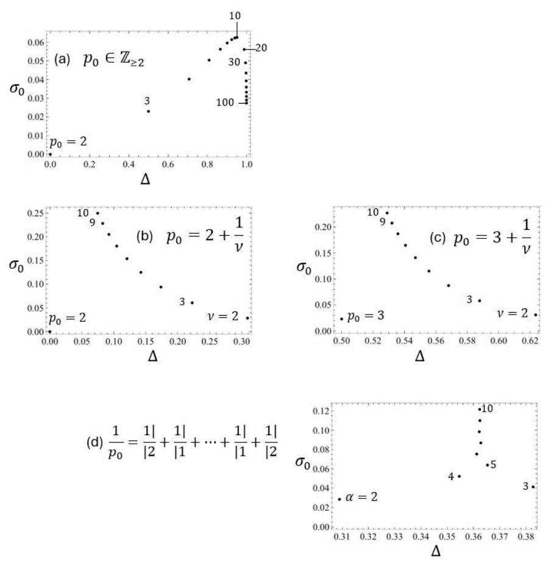
Summary. This paper uses Ballistic Macroscopic Fluctuation Theory to show that superdiffusive spin transport in the XXZ chain is driven by long-range spin correlations. It demonstrates that spin conductivity scales with 1/T at high temperatures and diverges at the isotropic point. This provides a theoretical link between microscopic correlations and macroscopic transport properties.
Why it may be interesting. This paper is highly relevant to many-body dynamics as it provides a fundamental link between long-range correlations and anomalous (superdiffusive) transport in integrable systems, which is a central topic in non-equilibrium statistical mechanics.
Main problem. Investigating whether superdiffusive spin transport in the XXZ chain is driven by 1/N-scaled long-range spin correlations and analyzing spin conductivity in the critical regime.
Main result. The study shows that spin conductivity is proportional to 1/T in the high-temperature limit and that its proportionality constant diverges as the system approaches the isotropic point, providing evidence for superdiffusive transport.
Method. The author employs Ballistic Macroscopic Fluctuation Theory (BMFT) combined with Generalized Hydrodynamics (GHD) and the Thermodynamic Bethe Ansatz (TBA) to analyze fluctuations and correlations.
Model / system. The spin-1/2 XXZ integrable spin chain in the critical regime (0 <= Delta < 1), characterized by an anisotropy parameter Delta = cos(theta).
Key observables. Spin conductivity, spin correlation functions, spin current density, magnetization density, and Drude weight.
Important parameters / regimes. Temperature (T), inverse temperature (beta), anisotropy parameter (Delta), and the thermodynamic limit (N -> infinity).
Assumptions / limitations. Assumes the system is in the critical regime, relies on the integrability-driven existence of infinitely many conserved charges, and assumes local thermal equilibrium within fluid cells.
Figures summary. The figures illustrate the behavior of the conductivity constant sigma_0 as a function of the anisotropy parameter Delta, showing its decay at the free fermion point and its divergence as it approaches the isotropic point.
Paper structure. The paper begins by defining the model and the problem of long-range correlations, moves through the application of BMFT and GHD to calculate the evolution of correlations, derives the relationship between conductivity and correlation functions, and concludes with the high-temperature limit and scaling at the isotropic point.
Based on the ballistic macroscopic fluctuation theory, the integration of the spin correlation function (spin conductivity) is analyzed for the spin-1/2 XXZ chain in the critical regime. In the time when the magnetization of an infinite spin chain fluctuates from an initial state with a wavelength as long as the infinite length $N$, the equal-time two-point spin correlation function is scaled up to $O(1/N)$. In the state where the ballistic spin transport decays at high temperature $T$, the diffusive transport remains on a large scale. We show that the spin conductivity is proportional to $1/T$ in the limit $T\to\infty$ and its high temperature proportionality constant diverges in the case where one-quasiparticle magnetization is infinitely large. This analysis informs that the superdiffusive spin transport is driven by the $1/N$-scaled long-range spin correlation and sheds a light on the dynamic scaling in spin transport at the isotropic point.
Authors: Ujjwal Gautam, Nasser Gohari Kamel, Sourabh Kumar, Daniel Oblak
Type: experiment · Category: quantum information and computing · PDF: https://arxiv.org/pdf/2605.01239v1
Analysis basis: abstract only; PDF text extraction failed or PDF unavailable
Topic relevance: 🔥 QC/QI experiment 4/5 · 🔥 quantum optics experiment 4/5
Summary. The researchers have demonstrated the first microwave-to-optical transducer that uses a quantum memory to enable on-demand signal retrieval. By using a Yb-doped crystal, they successfully reduced noise from pump pulses and showed that multiple modes can be transduced simultaneously. This advancement is crucial for building scalable quantum networks connecting superconducting processors.
Why it may be interesting. This work is highly relevant for quantum optics and quantum networks as it provides a solution for synchronizing qubits in quantum repeater protocols and increases entanglement generation rates through multimode capacity.
Main problem. The difficulty of eliminating noise caused by intense pump pulses during microwave-to-optical transduction, which is essential for connecting superconducting quantum devices.
Main result. Demonstration of the first on-demand microwave-to-optical transducer assisted by a quantum memory, achieving low noise levels (0.3-0.4 photons) and multimode transduction capacity.
Method. Integration of a quantum memory protocol with transduction within a three-level atomic system using a rare-earth-ion-doped crystal.
Model / system. A low-doping concentration 171Yb3+:Y2SiO5 crystal operated at a temperature of 30 mK, utilizing zero-first-order Zeeman transitions and GHz-range hyperfine splitting.
Key observables. Noise photon counts in the detection window, storage duration, interference patterns from varying input microwave pulse phase/frequency, and multimode transduction capacity.
Important parameters / regimes. Storage durations of 460 and 620 microseconds; noise levels of 0.4 and 0.3 photons; 30 mK operating temperature.
Paper structure. The paper introduces the challenge of noise in transduction, describes the implementation of a memory-assisted protocol in Yb-doped crystals, demonstrates on-demand retrieval and coherence via interference, and concludes with the demonstration of multimode capacity.
Microwave-to-optical quantum transducers will enable coherent interconnection between distant superconducting quantum devices. Ongoing explorations with several platforms have shown promising results at single-photon levels. However, in all these demonstrations, elimination of noise due to the concurrence of the weak transduced signal with intense pump pulses remains a challenge, requiring high suppression filtering setups. A memory-assisted transducer, on the other hand, offers a versatile approach that not only mitigates the noise but also enables the on-demand retrieval of the transduced signal. Here, we integrate a quantum memory protocol with transduction in a three-level atomic system to demonstrate on-demand retrieval of transduced signals. Due to the zero-first-order Zeeman transitions at zero magnetic fields, providing long optical and spin coherence times, and GHz range hyperfine splitting, we use a low-doping concentration $^{171}{\rm Yb}^{3+}$:${\rm Y}_2{\rm SiO}_5$ crystal at 30\,mK temperature. We achieve on-demand transduction assisted by memory with $0.4\ (\text{and }0.3)$ noise photons in the detection window at a storage duration of $460\ (\text{and }620) \, μ\textrm{s}$. To demonstrate the coherent nature of the protocol, we show interference patterns resulting from transduced signals due to varying phase or frequency of the input microwave pulses. Further, multimode transduction capacity is demonstrated, utilizing the spin and optical inhomogeneous broadening. The on-demand capability of the protocol allows synchronizing qubits in a quantum repeater protocol, while multimode capacity increases the entanglement generation rate. To the best of our knowledge, this is the first demonstration of an on-demand microwave-to-optical transducer assisted by memory.
Authors: Colin Burdine, Nischal Binod Gautam, Enrique P. Blair
Type: theory · Category: quantum information and computing · PDF: https://arxiv.org/pdf/2605.01244v1
Analysis basis: full PDF text, analyzed in chunks
Topic relevance: 🔥 Keldysh / 2PI / non-Gaussian methods 4/5 · methods for driven-dissipative 2/5 · non-equilibrium dynamics 2/5
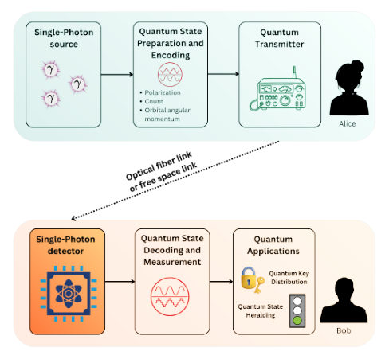
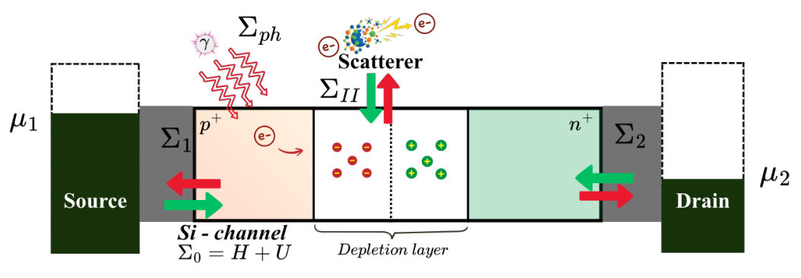
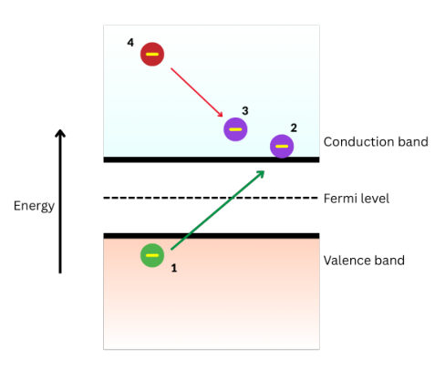
Summary. This paper introduces a quantum transport framework using NEGF to model impact ionization in silicon avalanche photodiodes. By treating carrier multiplication as a multi-particle self-energy, it provides an atomistic way to predict detector performance for quantum networks. This approach overcomes the limitations of traditional semiclassical models in nanoscale devices.
Why it may be interesting. It provides a rigorous many-body approach (NEGF/Keldysh) to modeling non-equilibrium, inelastic scattering processes that are critical for the hardware layer of quantum communication.
Main problem. The lack of a microscopic, atomistic description of impact ionization in nanoscale semiconductor avalanche photodiodes, which is necessary to predict detector performance for quantum networking.
Main result. The development of an NEGF-based framework that captures carrier multiplication as a multi-particle self-energy, establishing a transport baseline for predicting device metrics like dark counts and timing jitter.
Method. An atomistic quantum transport simulation using the Non-Equilibrium Green's Function (NEGF) formalism and the Self-Consistent Born Approximation (SCBA) implemented in PyTorch.
Model / system. A silicon p-i-n-like junction avalanche photodiode modeled with an equivariant tight-binding Hamiltonian (s+p basis) and semi-infinite p-type and n-type leads.
Key observables. Carrier multiplication, spectral function, local density of states (LDOS), transmission spectrum, and nonequilibrium charge distributions.
Important parameters / regimes. 25-nm depletion region, high electric fields, reverse bias voltage (e.g., -5V), and silicon doping concentrations.
Assumptions / limitations. The use of a compressed s+p basis limits high-energy conduction band accuracy; the electrostatic profile was imposed rather than solved self-consistently with Poisson; and the model lacks phonon/defect scattering.
Figures summary. Figure 1 shows a quantum network block diagram; Figure 2 illustrates the quantum transport model and self-energy components; Figure 4 compares tight-binding to DFT bands; Figure 5 shows the device geometry; Figure 8 displays the spatial tilt of the LDOS and the occupied DOS under bias.
Paper structure. The paper introduces the importance of detectors in quantum networks, identifies limitations in semiclassical modeling, presents the NEGF/SCBA mathematical framework, validates the tight-binding model against DFT, demonstrates the emergence of carrier multiplication, and discusses implications for device performance.
We present an atomistic quantum transport simulation framework based on the Non-Equilibrium Green's Function (NEGF) formalism to model impact ionization in semiconductor avalanche devices, with direct relevance to near-term quantum networking applications. Conventional descriptions of avalanche breakdown rely predominantly on semiclassical simulation methods, such as local ionization coefficients, semiclassical carrier trajectories, or Monte Carlo sampling, all of which implicitly assume weak correlations and mean-field electronic interactions. These assumptions break down in nanoscale, high-field junctions where carrier multiplication emerges from strongly non-equilibrium, energy-resolved scattering processes. Our approach formulates impact ionization as a multi-particle self-energy within NEGF, enabling a non-perturbative, energy- and atomic orbital-resolved description of carrier multiplication directly from the device spectral function. This formulation captures strongly inelastic scattering processes beyond semiclassical approximations and is implemented in a matrix-based real-space representation suitable for nanoscale device modeling. Using a model semiconductor structure under high electric fields, we demonstrate the emergence of carrier multiplication and analyze its dependence on energy-resolved transport and nonequilibrium charge distributions. The framework provides insight into microscopic mechanisms governing avalanche processes and their impact on device performance. Our results establish a transport baseline for self-consistent calculations of the impact-ionization self-energy and carrier multiplication. By resolving the available and occupied states that underlie avalanche onset, this framework provides a route toward predictive modeling of silicon single-photon avalanche detectors and avalanche photodiodes used in quantum-network receivers.
Authors: Chaorong Guo, Hongzheng Wu, Zenong Zhou, Ai-Xi Chen, Xiaobing Luo
Type: theory · Category: quantum information and computing · PDF: https://arxiv.org/pdf/2605.02166v1
Analysis basis: full PDF text, analyzed in chunks
Topic relevance: 🔥 non-equilibrium dynamics 4/5 · analog quantum simulation 3/5 · entanglement & information structure 1/5
Summary. The paper presents a universal theory for achieving perfect, unidirectional quantum state transfer around any N-site ring by designing a Hamiltonian with an equidistant energy spectrum. It demonstrates that this can be physically realized using Floquet engineering in driven chains or through the intrinsic statistics of anyons. This provides a robust, analytical framework for creating quantum routers in diverse experimental platforms.
Why it may be interesting. This work provides a deterministic 'quantum router' design that is highly relevant for quantum information processing, offering a scalable framework for unidirectional state transfer in various platforms like superconducting circuits and photonic synthetic dimensions.
Main problem. Establishing a universal analytical design for perfect chiral circulation—the sequential transfer of a quantum state around an N-site ring with unit fidelity—and overcoming the lack of a general theory for rings larger than three sites.
Main result. The authors prove that an equidistant energy spectrum is the necessary and sufficient condition for perfect chiral circulation in translationally invariant rings and provide an exact closed-form Hamiltonian construction for arbitrary N.
Method. The study uses spectral analysis of the evolution operator, Magnus expansion for Floquet engineering, and second-order perturbation theory for anyonic doublon dynamics to derive and validate the required Hamiltonian parameters.
Model / system. The model consists of translationally invariant N-site rings with periodic boundary conditions, specifically realized through Floquet-engineered driven open chains and anyon-Hubbard models involving correlated doublon dynamics.
Key observables. Site populations (Pn(t)), average transfer fidelity (F_bar), energy spectrum, and group velocity.
Important parameters / regimes. Number of sites (N), total synthetic flux (Phi), hopping amplitudes (J), driving frequency (omega), drive amplitude (A), drive phase (phi), and anyonic statistical angle (theta).
Assumptions / limitations. The Floquet analysis assumes the high-frequency limit (J << omega), and the anyonic model assumes the strong-interaction regime (U >> J).
Figures summary. Figure 1 shows a schematic of the N=3 chiral ring and state transfer direction; Figure 5 compares numerical results of the driven Hamiltonian against analytical effective models.
Paper structure. The paper begins by establishing the universal spectral criterion for chiral circulation, then provides the analytical Hamiltonian construction, followed by specific physical realizations via Floquet engineering and anyonic physics, and concludes with scalability and robustness tests.
Perfect chiral circulation-the sequential transfer of a quantum state around a closed loop with unit fidelity-has been achieved in specific few-site systems, yet a general theory remains absent. We prove that for translationally invariant $N$-site rings, an equidistant energy spectrum is the necessary and sufficient condition for such circulation, and we derive an exact closed-form Hamiltonian valid for arbitrary $N$. In the minimal three-site ring, we demonstrate two physically distinct realizations: Floquet engineering in a driven open chain, and correlated doublon dynamics in an anyon-Hubbard model where fractional statistics intrinsically provide the requisite gauge flux. Grounded in this universal spectral criterion and an explicit Hamiltonian construction, we provide an analytical, transparent design framework for perfect chiral circulation applicable to diverse platforms, such as superconducting circuits, classical electrical circuits, and photonic synthetic dimensions.
Authors: Seyed Mohsen Moosavi Khansari
Type: theory · Category: quantum information and computing · PDF: https://arxiv.org/pdf/2605.02155v1
Analysis basis: full PDF text, analyzed in chunks
Topic relevance: 🔥 entanglement & information structure 4/5 · non-equilibrium dynamics 3/5
Summary. This paper explores how using GHZ-entangled coins in a quantum walk can enhance the correlation between the coin and position degrees of freedom. While entanglement initially causes a delay due to destructive interference, it ultimately leads to significantly higher mutual information and faster spatial spreading. These findings suggest that pre-existing entanglement can be a powerful tool for engineering information dynamics in quantum protocols.
Why it may be interesting. It demonstrates how multipartite entanglement can be used as a resource to control information flow and accelerate correlations, which is highly relevant for designing efficient quantum state transfer and quantum sensing protocols.
Main problem. Investigating how initial tripartite entanglement in a three-coin system affects the dynamics of mutual information and spatial spreading in a discrete-time quantum walk.
Main result. GHZ-type entangled states exhibit a 'delay-and-rise' non-monotonic dynamic that eventually leads to up to 18% higher mutual information between coin and position by the tenth step compared to separable states.
Method. Analytical calculations for early-time interference mechanisms and numerical simulations of the quantum walk evolution on a 1D lattice.
Model / system. A discrete-time quantum walk on a 1D lattice with an 8-dimensional coin Hilbert space (three qubits) and a 'unanimous-coin' displacement rule where movement only occurs if all three coins are in the same state.
Key observables. Quantum mutual information between coin and position, von Neumann entropy of reduced subsystems, and position entropy (spatial spreading).
Important parameters / regimes. Initial entanglement type (separable, bipartite, or GHZ), number of walk steps, and the dimensionality of the coin space.
Assumptions / limitations. The global state remains pure (no decoherence or environmental coupling) and the position space is truncated to a finite lattice.
Figures summary. The notes refer to a Table 1 showing the evolution of mutual information for different initial states and a Figure 1 (description incomplete in notes) likely illustrating the dynamics of the walk.
Paper structure. The paper introduces the triple-coin model and displacement rule, compares different initial entanglement configurations, provides analytical derivations for short-time interference, presents numerical results for mutual information and spatial spreading, and discusses implications for quantum protocols.
This work investigates a discrete-time quantum walk on a one-dimensional lattice driven by three entangled coins, each initialized via a Hadamard operator. The walker moves only when all three coins yield identical outcomes (HHH or TTT), coupling an 8-dimensional coin Hilbert space to the position degree of freedom. We analyze fully separable, fully entangled, and intermediate initial coin states, computing the von Neumann entropy of reduced subsystems to derive the mutual information between coin and position over successive steps. Our results demonstrate that initial tripartite entanglement significantly accelerates the growth of mutual information and enhances coin-position correlations compared to separable initial conditions. Notably, GHZ-type entangled states exhibit non-monotonic short-time dynamics due to interference, yet ultimately yield up to 18% higher mutual information by the tenth step. These findings underscore the role of pre-walk entanglement as a resource for controlling information flow and spatial spreading in quantum-walk-based protocols, with implications for quantum transport, state transfer, and correlation engineering.
Authors: Taras Krokhmalskii, Taras Verkholyak, Ostap Baran, Dmytro Yaremchuk, Taras Hutak, Oleg Derzhko
Type: theory · Category: strongly correlated electrons · PDF: https://arxiv.org/pdf/2605.01033v1
Analysis basis: full PDF text, analyzed in chunks
Topic relevance: 🔥 spintronics-quantum-optics interface 4/5 · exotic spin models in light-matter 3/5
Summary. This paper explores how an external magnetic field can manipulate the propagation of electromagnetic waves through a quantum spin chain. By calculating the dispersion relation, the authors show that the wave velocity and attenuation can be precisely controlled, especially in the THz frequency range. The findings provide a theoretical foundation for using quantum magnetic media as tunable components for electromagnetic wave control.
Why it may be interesting. This work is relevant to quantum optics and many-body dynamics as it demonstrates a mechanism for controlling light-matter interaction and wave propagation using tunable quantum many-body states.
Main problem. Investigating how the propagation, velocity, and attenuation of electromagnetic waves can be controlled in a one-dimensional magnetic crystal using an external magnetic field.
Main result. The study identifies that the dispersion relation and refractive index are highly tunable via the magnetic field, revealing specific frequency regimes of anomalous dispersion and damping, particularly at characteristic frequencies related to the field strength.
Method. The authors use Jordan-Wigner fermionization to solve the spin Hamiltonian exactly and apply Maxwell's equations in matter to derive the electromagnetic dispersion relation.
Model / system. A 1D spin-1/2 isotropic XY chain in a transverse magnetic field, representing a quasi-1D magnetic crystal with nearest-neighbor exchange coupling J.
Key observables. Complex wavevector k(omega), dispersion relation, magnetic susceptibility tensor, refractive index, wave velocity, and attenuation coefficient.
Important parameters / regimes. Magnetic field strength (B/J), frequency (omega/J), temperature (T), and exchange interaction (J).
Assumptions / limitations. The medium is assumed to be nonconducting and nonpolarizable; the interatomic distance is much smaller than the wavelength; the model is limited to an exactly solvable free-fermion system.
Figures summary. Figure 1 shows a schematic of EM wave propagation and field orientations; Figure 2 displays the dynamic susceptibility; Figure 3 plots wave velocity and damping across different magnetic field strengths.
Paper structure. The paper introduces the physical model, establishes the mathematical framework for EM propagation in magnetic media, performs exact calculations using fermionization, analyzes results in strong and weak field regimes, and discusses future generalizations.
We consider a simple model of one-dimensional magnetic crystal and examine the propagation of an electromagnetic wave through such a medium. Calculating the dispersion relation ${\bf k}(ω)$ allows us to illustrate how the spread of the electromagnetic wave can be controlled by an external magnetic field. Our rigorous calculations should be useful for more realistic (and less tractable mathematically) models of magnetic media.
Authors: Nguyen Truong Thu Ngo, Väinö Mehtola, Jérome Lenssen, Peiyong Wang, Francesco Cosco, Tien-Fu Lu, James Q. Quach
Type: both · Category: quantum information and computing · PDF: https://arxiv.org/pdf/2605.01716v1
Analysis basis: full PDF text, analyzed in chunks
Topic relevance: 🔥 QC/QI experiment 4/5 · quantum measurements 3/5
Summary. This paper demonstrates a method for real-time control of a CartPole system using a hybrid quantum-classical reinforcement learning agent on a physical superconducting QPU. By bypassing standard software layers, the researchers achieved significant increases in execution speed and identified the optimal balance between measurement precision and control frequency for stable operation.
Why it may be interesting. It addresses the critical intersection of quantum control and real-time feedback loops, providing insights into how hardware-induced noise and latency affect the stability of quantum-classical hybrid dynamical systems.
Main problem. Bridging the gap between idealized quantum reinforcement learning simulations and practical, real-time deployment on physical NISQ hardware by addressing latency, noise, and the trade-off between control frequency and measurement precision.
Main result. A single-qubit hybrid agent demonstrates superior sample efficiency compared to classical networks and, by bypassing high-level software stacks to program electronics directly, achieves a >40x speedup in iteration rates on a superconducting QPU.
Method. A hybrid quantum-classical actor-critic framework using a single-qubit variational quantum circuit (VQC) trained via the parameter-shift rule and optimized with the Adam optimizer.
Model / system. The system uses the CartPole-v1 benchmark task implemented on the VTT Q5, a 5-qubit superconducting quantum processor, utilizing Zurich Instruments readout electronics programmed via low-level command tables.
Key observables. Expectation value of the Pauli-Z measurement, control-loop inference frequency, measurement shot budget, and episode return (stability).
Important parameters / regimes. Control frequency (20-100 Hz), shot count (128-1024), qubit coherence times (T1, T2), and gate durations (120 ns).
Assumptions / limitations. The cart position is discarded from the state vector to simplify single-qubit encoding, and the study assumes the use of a specific 3D feature vector.
Figures summary. Figures include the CartPole environment schematic, neural network architectures (classical and hybrid), learning efficiency trajectories, heatmaps of stability vs. frequency/shot count, and a comparison of hardware execution latency.
Paper structure. The paper introduces the control problem, describes the hybrid agent architecture and hardware setup, presents simulation-based learning efficiency results, analyzes the impact of frequency and shot-count trade-offs, and concludes with a low-latency hardware implementation demonstration.
The application of quantum reinforcement learning (QRL) to real-time control systems faces significant challenges regarding hardware latency, noise susceptibility, and learning convergence. This work presents an end-to-end investigation of a minimal hybrid quantum-classical agent applied to the CartPole benchmark, addressing the gap between idealized simulation and execution on a physical superconducting quantum processing unit (QPU). We demonstrate that a single-qubit agent acts as an effective learning model, solving the environment in substantially fewer episodes than a comparable classical actor-critic network even when the training of the hybrid agent is restricted to use parameter-shift for its quantum circuit component. To connect learning to deployment constraints, we map the inference-time trade-off between control-loop rate and measurement shot budget to provide guidance for an eventual real-time control demonstration. The resulting performance matrices show that both inference control frequency and shot count strongly affect balancing stability: higher inference frequencies consistently improve performance, and increasing the shot budget lowers the minimum inference frequency required to achieve near-maximal balancing. These results highlight the importance of finding an optimal medium between shot count and control frequency and developing circuits that are e.g. initial-state invariant. Lastly, we address the critical bottleneck of control latency on NISQ hardware by bypassing the standard high-level software stack and programming the Zurich Instruments readout electronics directly via command tables. These results quantify some of the current boundaries of quantum-assisted control and provide a start for achieving the tens-of-hertz throughput required for real-time closed-loop control feedback.
Authors: Heleni Krelman, Ori Nefesh, Liron Stern
Type: experiment · Category: other · PDF: https://arxiv.org/pdf/2605.01997v1
Analysis basis: full PDF text, analyzed in chunks
Topic relevance: 🔥 quantum optics experiment 4/5 · QC/QI experiment 2/5
Summary. The study demonstrates efficient nonlinear frequency conversion in tiny, micromachined Rubidium vapor cells. By optimizing optical overlap and atomic density, the researchers achieved higher efficiency for blue light generation than traditional large-scale cells, providing a foundation for integrated quantum sensors and light sources.
Why it may be interesting. This work is highly relevant to quantum optics and AMO physics as it demonstrates a scalable, chip-integrated platform for generating coherent quantum light sources and frequency-translated photons, essential for quantum sensing and integrated quantum networks.
Main problem. Achieving efficient nonlinear frequency translation (four-wave mixing) in miniaturized, chip-scale alkali-metal vapor cells where the reduced interaction length typically lowers conversion efficiency.
Main result. Demonstrated efficient generation of coherent blue (420 nm) and mid-IR (5.2 um) light in micromachined Rb cells, achieving higher blue-light efficiency than conventional glassblown cells due to optimized optical overlap and higher atomic densities.
Method. The researchers used resonant four-wave mixing in a diamond-type four-level scheme in 85Rb, utilizing micromachined Si-Pyrex cells and varying temperature and laser detuning to optimize the nonlinear process.
Model / system. A chip-scale Rubidium (Rb) vapor platform consisting of micromachined cells (internal cavity ~2x2x1.4 mm^3) using a diamond four-level atomic scheme involving 780 nm and 776 nm transitions.
Key observables. Coherent blue light (CBL) power at 420 nm, coherent mid-IR light (CMIRL) power at 5.2 um, spectral linewidth of CBL, and temperature/power scaling of emissions.
Important parameters / regimes. Atomic density-length product (N*L), laser detuning, cell temperature, pump laser power, and AC Stark shifts.
Assumptions / limitations. Use of the non-depleted pump regime analytical solution where efficiency scales as sinh^2(gamma*L).
Figures summary. The figures include a transmission profile of the Fabry-Perot cavity mode for linewidth measurement and data regarding the efficiency and scaling of the nonlinear processes.
Paper structure. The paper introduces the challenge of miniaturization, describes the micromachined platform and atomic configuration, details the experimental setup for blue and mid-IR detection, presents results on temperature and power scaling, compares the chip-scale performance to glassblown cells, and concludes with potential applications.
The exceptional nonlinearity of alkali-metal vapors enables highly efficient nonlinear optical processes even at relatively low optical intensities. However, such processes have traditionally relied on centimeter-scale vapor cells. Here, we utilize a versatile chip-scale Rb vapor platform to generate coherent blue and mid-IR light in continuous-wave mode by means of resonant four-wave mixing. Optimized optical overlap with the atomic medium enables blue light generation of $\sim$20 $μ$W over a very short interaction length, while maintaining a directly measured linewidth of $\sim$1 MHz, which is presently limited by the measurement apparatus. Comparison with a conventional glassblown vapor cell further shows that the micromachined platform can achieve higher coherent blue-light generation efficiency despite its substantially shorter interaction length. Moreover, an anodically bonded Si window enables to detect coherent mid-IR emission with collected powers of $\sim$50 nW. We further characterize the temperature dependence and input-power scaling of the blue emission, confirming efficient nonlinear conversion within these compact vapor cells. This chip-scale platform provides a versatile foundation for a range of nonlinear optical functions, from precise wavelength references and quantum light sources to next-generation quantum sensors.
Authors: Francois Payn, Davide Girolami
Type: theory · Category: quantum information and computing · PDF: https://arxiv.org/pdf/2605.01375v1
Analysis basis: full PDF text, analyzed in chunks
Topic relevance: 🔥 entanglement & information structure 4/5 · quantum measurements 2/5
Summary. This paper presents a new method to estimate multipartite entanglement using only observable quantities like state purities and correlations. It avoids the exponential cost of full state tomography and provides a scalable way to certify entanglement in large-scale quantum systems. The approach is particularly useful for characterizing GHZ, W, and Dicke states in the presence of noise.
Why it may be interesting. This is highly relevant for experimentalists in AMO and quantum optics as it provides a way to certify complex multipartite entanglement using low-depth measurements (purity and correlations) without the need for full state tomography.
Main problem. Quantifying multipartite entanglement in laboratory settings is extremely difficult because it typically requires full state tomography or computationally intractable calculations for mixed states.
Main result. The authors developed a framework of experimentally accessible upper and lower bounds for multipartine entanglement (including entanglement of formation and squashed entanglement) using only local and global state purities and correlation functions.
Method. The approach uses the entropy strong subadditivity inequality and the Koashi-Winter monogamy relation to derive bounds, and employs a dynamic programming strategy to efficiently compute these bounds for large systems.
Model / system. The framework applies to arbitrary-sized multipartite quantum systems, with specific analytical and numerical tests performed on GHZ, W, and Dicke states, as well as random pure states.
Key observables. Local and global state purities, correlation functions of local observables, and operator norms.
Important parameters / regimes. System dimension (d), number of particles (N), entanglement degree (k), and noise/purity parameters (p).
Assumptions / limitations. The bounds are most effective when the global state is nearly pure; the method assumes that higher-order purities are measurable, though higher-order expansions increase measurement complexity.
Figures summary. Figure 1 shows how bounds certify N-partite entanglement in dephased GHZ states; Figure 2 illustrates the scaling of entanglement bounds for GHZ, W, and Dicke states; Figure 3 shows the entanglement structure of random pure states.
Paper structure. The paper introduces the problem of entanglement quantification, derives bipartite bounds using information-theoretic inequalities, extends these to multipartite entanglement using a recursive method, and validates the results through analytical tests on symmetric states and numerical simulations of random states.
Multipartite entanglement is the premier resource for quantum technologies. Yet, its exact quantification in the laboratory is notoriously challenging, typically requiring the full knowledge of high dimensional quantum states. Here, we construct observable bounds to multipartite entanglement for systems of arbitrary size, which are functions of the local and global state purities, and correlation functions. First, we derive experimentally accessible upper and lower limits to both the bipartite entanglement of formation and the squashed entanglement of bipartite systems, by leveraging cornerstone results of quantum information theory: the entropy strong subadditivity inequality and the Koashi-Winter monogamy relation. Then, we convert them into bounds to the entanglement up to degree k for arbitrary states, and to the genuine k-partite entanglement, by employing a recently proposed method. Finally, we analytically and numerically test these results, by bounding the multipartite entanglement of several relevant states and mixtures, including the important classes of GHZ, Dicke, W states, and random pure states.
← Index · ← Previous · Next →